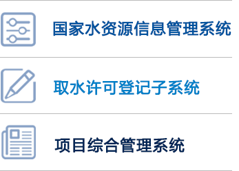

要闻
- 习近平向汶川地震十周年国际研讨会...
内容摘要内容摘要内容摘要内容摘要内容摘要内容摘要内容摘要 内容摘要内容摘要内容摘要内容摘要内容摘要内容摘要....[详情]
- 习近平向汶川地震十周年国际研讨会 暨第四届大陆地震国
- 胡春华主持召开防汛抗洪救灾专题会议
- 胡春华出席国家防汛抗旱总指挥部全体会议并讲话
- 胡春华在河南安徽湖北调研防汛工作
- 雅鲁藏布江堰塞湖洪水威胁基本消除
- 金沙江堰塞湖基本恢复常态 坝下水位平稳 险情得到有效控制
